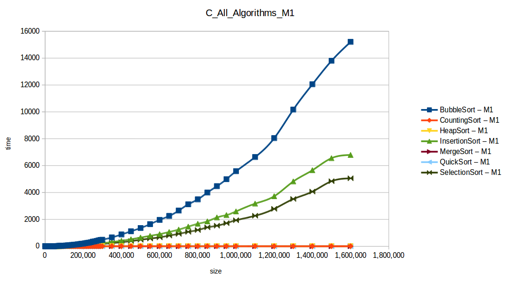
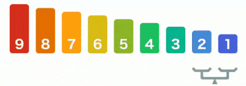
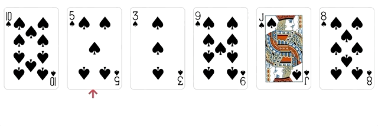

Los algoritmos de ordenamiento nos permiten, como su nombre lo dice, ordenan vectores con valores asignados. Existe desde el método más simple, como el Bubblesort (o Método Burbuja), que son simples iteraciones, hasta el Quicksort (Método Rápido), que al estar optimizado usando recursión, su tiempo de ejecución es menor y es más efectivo.

Recorrer un conjunto de datos comparando pares de elementos. Si el primero es mayor al segundo, invertir sus lugares. Repetir el procedimiento hasta recorrer todo el conjunto.

Los grandes van muy rápido a su lugar en el orden (burbujas, conejos)
Los pequeños se hunden lentamente (tortugas)
// Java program for implementation of Bubble Sort
public static void bubblesort(int array[])
{
int n = array.length;
for(int i = 0; i< n-1; i++){
for(int j = 0; j< n-i-1; j++){
...
}
}
}
// Java program for implementation of Bubble Sort
public static void bubblesort(int array[])
{
int n = array.length;
for(int i = 0; i< n-1; i++){
for(int j = 0; j< n-i-1; j++){
if(array[j] > array[j+1]) {
int temp = array[j];
array[j] = array[j+1];
array[j+1] = temp;
}
}
}
}
Toma los elementos de la lista uno a uno y los inserta en el orden correspondiente. 